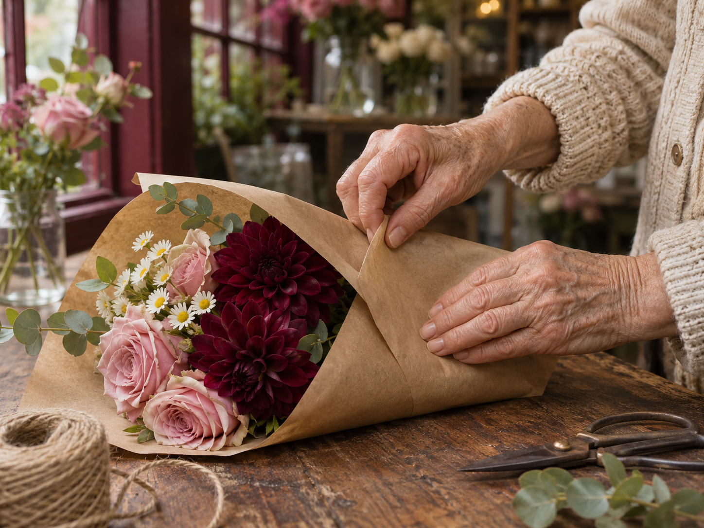
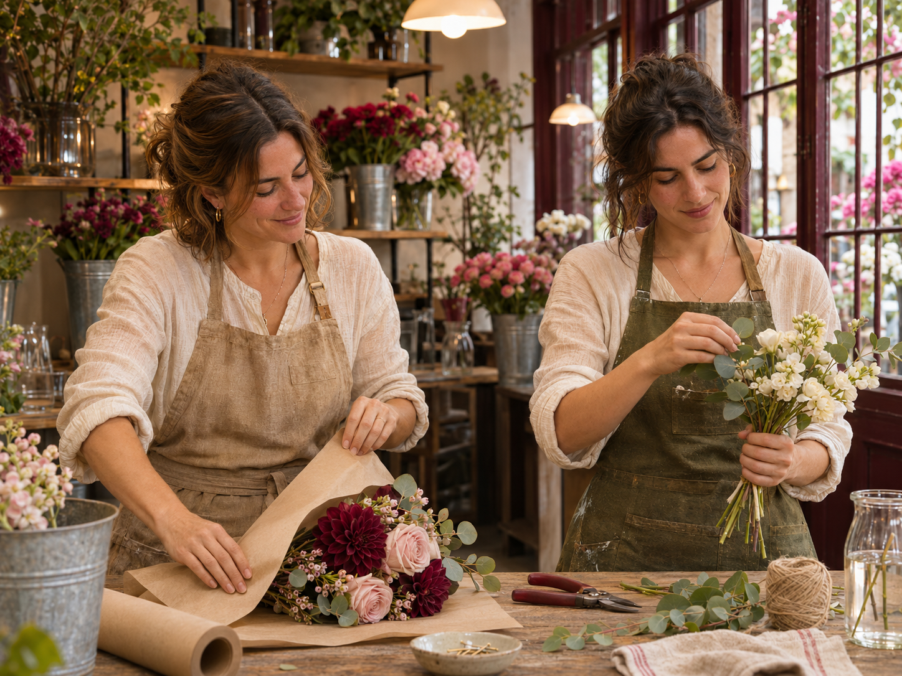
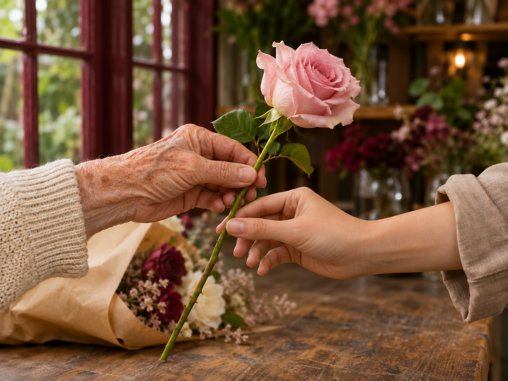

Sobre nosotros


“Lo nuestro viene de antes.”
Somos Lili y Rosa, dos hermanas que crecimos pasando las tardes en la floristería de nuestra abuela Petunia. Mientras ella preparaba los encargos, nosotras recogíamos los tallos que sobraban e intentábamos hacer nuestros primeros ramos. Allí aprendimos que, antes de elegir las flores, había que escuchar la historia de quien venía a buscarlas.
Con los años tomamos caminos distintos: una entre números, trabajando en economía, y la otra entre planos, dedicada a la arquitectura. Pero cuando nuestra abuela se jubiló y la tienda cerró, las dos empezamos a pensar en volver. Decidimos dejar nuestros trabajos, formarnos en diseño floral y aprender de ella todo lo que aún nos quedaba por descubrir.
Hoy hemos vuelto a abrir las puertas de Petunia. Conservamos su mesa de madera, sus tijeras y esa forma de atender sin prisas. A los ramos de siempre les hemos sumado talleres, bodas y nuevas ideas, manteniendo el cariño con el que ella empezó.
Nos gusta pensar que cada persona que entra continúa un poquito esta historia. Con una flor para casa, un ramo inesperado o las flores de un día que recordará siempre.
